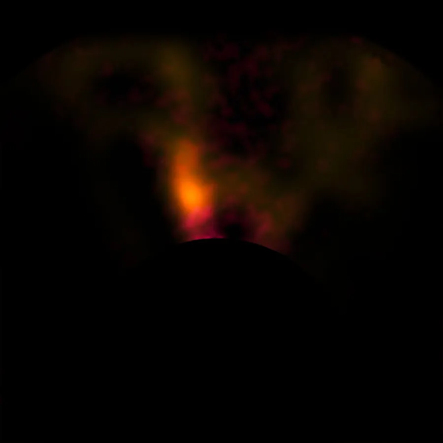

February 28, 2013
Possible forming planet in the disk around HD 100546
Using the NACO instrument on ESO's Very Large Telescope, astronomers discovered a candidate protoplanet in the disk of gas and dust around the young star HD 100546. In the image a coronagraph hides the star (dark disk at the bottom); the brightest spot is the candidate.
It is located about 70 times farther from the star than the Earth is from the Sun. ESO called a forming gas giant the most likely explanation but stressed that follow-up observations are needed for confirmation. HD 100546 is 335 light-years away.
Sources: ESO: "The Birth of a Giant Planet? Candidate protoplanet spotted inside its stellar womb" (eso1310)., 2013-02-28; ESO: "VLT image of the protoplanet around the young star HD 100546" (image eso1310c)., 2013-02-28